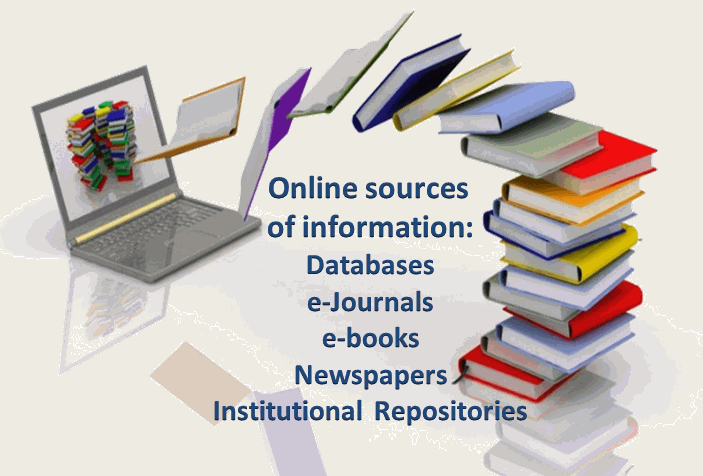
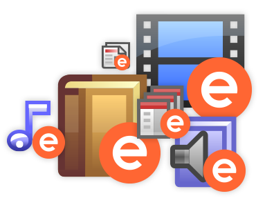
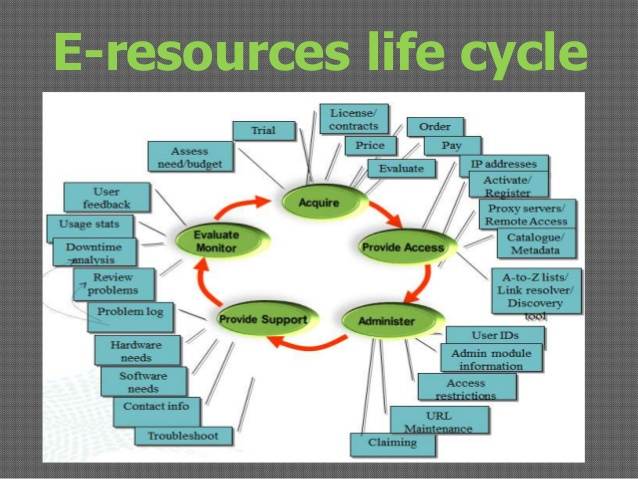

What Are E-Resources?

An electronic resource is any information source that any library
provides access to in an electronic format. These libraries could
be both offline as well as online ones. These libraries purchase
subscriptions to many electronic information resources, and provide
the general users with access to such resources, either free of cost
or by charging a small amount as rent. E-Resources include lots of
things: full-text journals, newspapers, company information,
dictionaries, encyclopedias, economic data, digital images,
industry profiles, market research, career information,
electronic journals (e-journal), electronic books (e-book) online
databases in varied digital formats, Adobe Acrobat documents (.pdf),
WebPages (.htm, .html, .asp etc) and more.
Purpose and needs of e-resources
Information centres and libraries have the challenges to maintain the overflow of new-
fangled literature. A number of developments have been occurred in recent years with respect
to the electronic resources. Publishers are concerned about costs, reader behaviour and
expectations, rights management and archiving. Scholars prefer to have trouble-free access to
intricate information, including easy access to full text and reference linking. On the other
hand the aggregators face the problem of organization content from various sources,
providing orientation linking not only their own service but to other service providers,
ensuring wholeness and privileges management and archiving. Library consortia have
become extremely significant by means of cooperative purchasing and conciliation of
licenses, they are assured for access and proper management. In addition e-resources serve
the following purposes:
- The space problem in library.
- Save the time of user and staff.
- Easy to sue and disseminate the information.
- Electronic resources is providing the current information.
- Update information is necessary for research work.
Advantages Of E-Resources
- Access of material any time, any where.
- Easy to use.
- Additional e-journals link facility.
- Fast and quick access of desired information.
- Access of material with multimedia( Video, animation, sound,
graphical form etc.)
- Time saving.
- Cheaper than print materials.
- Multi-access: A networked product can provide multiple points of
access at multiple points in time and to multiple simultaneous user.
- Helps to reduce the burden of library staff.
- Reduces storage space.
Now Some Disadvantages...
- Initially high infrastructure and installation cost.
- Need special equipment to access.
- Causes more concern about copyright.
- Staff training is required.
- Unfamiliar with retrieval of the e-resources.
- Scholars and readers prefer to read print material for concentration.
- Possibility of unawareness of relevant resources among users.
- Inconvenient and uncomfortable in reading.
Maintenance Of E-Resources

An obvious and direct effect of the increasing availability of
electronic resources in library collections was, and still is,
the need to control and manage them. As simple as this task may
sound, librarians and library professionals, are still trying—more
than a decade after the appearance of these electronically based
resources—to find ways to administer these resources with the same
comprehensive efficiency as that accomplished with print resources,
all with new sets of tools and skills specifically tailored to
the resources themselves and the new services these resources create.
Management Of E-Resources

E-resources are not visible to the users as in
traditional libraries where resources are physically
available for browsing and use. Libraries subscribe to
the different packages of different publishers/vendors,
as such information sources remain scattered which is
not convenient to the users for browsing and
searching. All such resources need to be integrated for
access with a single stroke of key. Users neither have
time nor patience for visiting number of locations of
websites or platforms. Present library software hardly have
adequate provisions to handle e-resources except a few.
Libraries are finding existing software incapable of
handling e-resources. Some libraries have developed
their own local system to fill up the gap. Even then, e-
resources in libraries mostly remain unorganized
scattered on publishers’ websites. Their management
is so complex that it is difficult to find satisfactory
solutions as required by the users as well as by library
staff. There are multiple approaches of the users to
access e-resources and ERMS is expected to satisfy
all possible approaches of the users and also the
requirements of the library staff in maintaining them.
Problems In The Use Of E-Resources
- Remote access must not be shared with unauthorized persons or non-users.
- Access of association or organization‘s Internet in a nasty manner to modify or destroy any information or material available on the internet or on any network accessible through the Internet for which user does or not own or have explicit permission to alter or destroy.
- Servers are only permitted it they use a small portion of the E-resources, do not violate any other policy or law, or interfere with or limit E-resources available for authorized use. All network game serves are forbidden.
- Alter the source address of messages, or otherwise forging email messages.
- Use Marquette systems to relay mail between two non-Institution email systems.
- Engage in activities that harass, degrade, intimidate, demean, slander,defame, interfere with or threaten others.
- Attempt to degrade the performance of the system or to deprive authorized users of E-resources or access to any institution E-resources.
- Physically damage or vandalize e-resources.
- Provide access codes to any user not authorised for such access or non-users.
- Introduce, create or propagate computer viruses, worms, Trojan Horses, or other malicious code to Institution E-resources.
- Use knowledge of security or access controls to damage computer and network systems, obtain extra E-resources or gain access to accounts for which they are not authorized.
Challenges And Opportunities In Maintenance Of E-Resources
-
Building digital collections of national importance from
existing texts, documents, images.
-
Creating new digital documents & linking them.
-
Subject portals: Selecting and maintaining open source
digital resources.
-
Developing / adapting management tools for digital collections.
-
Providing access to digital collections.
-
Integrating digital & other library collections. Including
integration of OPACs, subscribed e-resources and subject portals.
-
Establishing services for digital libraries. Providing both
online access & offline support. Providing education & training
of users and librarians.
-
Addressing social, legal, policy issues.
-
Outsourcing digitization and services.
Practical Ideas To Manage E-Resources
- Using ERMS.
ERMS, which stands for Electronic Resources Management Software,
is the most versatile software used for managing electronic resources.There are
many different ERMS's available in the market like-AMSL, CORAL, Consortia Manager.
ERM systems support acquisition and management of licensed e-resources. They may be
integrated into other library system modules or may be a standalone system.They help
in tracking electronic resources from point of order through licensing and final access.
- Evaluate user needs.
Are you new at your job? Then begin by conducting
a needs assessments, formal or informal. Check the programs and course
offerings to make sure they still align with the e-resources for which
you pay. Seek out faculty, colleagues, and students to get a sense of
what resources they assign, use, or see used. Pull usage statistics from
each database–and be sure to cross-reference this vendor data with web
analytics because vendor data can be self-serving to the point of fictitious.
Do your users use each resource enough to justify its cost? And they do really
require the level of access you’re paying for? If not, can the resources
be marketed and usage increased? And if there’s just no market, can those
funds be reallocated and more relevant sources acquired?
- Be budget-conscious.
Budgets are a huge consideration for any
e-resources manager given that libraries are constantly absorbing budget
cuts while vendors raise prices 3-5% a year, on average. Can your library
afford to provide the resources it currently offers? More importantly,
can the funds be used better? Can you save ten thousand dollars on one
contract simply by re-negotiating the number of concurrent users so as to
reflect enrollment? Can you review your databases for duplication of content?
Can you tap free, open access resources to plug content gaps or replace
proprietary platforms? Can you talk to vendors and peruse old records to
check for any unused credits lying around? And above all, how can you make
the case for spending more money on electronic resources?
- Negotiate terms.
Often you don’t actually need to throw more money
at e-resources to get the best value. Most vendor reps are authorized
to reduce off-the-shelf pricing by 20-25% without consulting their boss,
and if you push hard enough–especially with smaller or longstanding service
providers with a stake in the clientele–you can save potentially huge sums
that can then be reallocated to purchase more databases or ebooks. And even
if you don’t get a big discount, at least you can get special add-ons or
other privileges. But you have be willing to negotiate and drive a hard bargain.
Don’t be mean, because vendors are people too–usually very nice people;
I’m Facebook friends with several. But we have to remember that our first
duty is to get the best value for our taxpayers or students, not to “be nice”
to the private sector and hand them all our money without demur.
- Take advantage of add-ons.
Even if you aren’t a tough negotiator, you
can derive maximum benefit from your subscriptions by exploring untapped
services and add-ons most vendors provide. Want to market an e-resource?
Check with the vendor-chances are that they can provide free web-based
training and marketing materials. Annoyed that a database doesn’t integrate
with your discovery layer? Talk to the vendor’s tech team; chances are that
you can work something out. And major subscriptions often come with package
deals and free add-ons. For example, libraries that use OCLC’s WorldShare as
their ILS may be surprised to discover that ContentDM comes bundled with a
WMS subscription.
- Learn to love documentation.
Document everything. Seriously. When I started
my position, there was no systematic workflow or documentation in place, older
invoices were packed loose into folders, and invoices would trickle in randomly
through snail mail. I created budget spreadsheets listing databases, vendors,
pricing, and period of service; digitized and classified a year’s worth of records;
and converted the system to e-invoicing. I also created a master password list for
all administrative logins and a contact list for the reps and tech support for each
e-resource. Not only does this streamline your workflows and preempt internal audits,
but also enables you to document what e-resources you have, how much money you have
saved, and how much money you can spend before the new fiscal year.